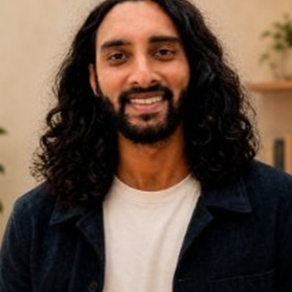

Une agence growth B2B
Les campagnes de plusieurs clients B2B en parallèle, dont un acteur de la livraison express et un éditeur de logiciels, avec un reporting régulier au client.
Pour qu'on passe notre demi-heure sur l'essentiel, j'ai rassemblé ici mon parcours, mes chiffres, la façon dont je prendrais en main un client, mes outils, et la manière dont je remplirais l'agenda de GROW.

Je connais la vie d'agence, et je connais aussi la vie du client. En agence, je livrais des rendez-vous à plusieurs clients en parallèle et je leur rendais des comptes. Chez OFFOLIO, c'était ma propre entreprise qui attendait les démos. Les deux fois, en petite équipe.
Les campagnes de plusieurs clients B2B en parallèle, dont un acteur de la livraison express et un éditeur de logiciels, avec un reporting régulier au client.
L'outbound de l'entreprise sur Lemlist : choix des cibles, planning d'envoi, séquences, registre des leads et suivi des démos.
Je trouve mes clients moi-même, par sessions d'appels à froid.
En bénévolat, j'ai aussi construit avec Claude Code le site et l'outil d'inscription de mon club de karaté. Voir
J'ai pensé et créé ces campagnes moi-même, avec les méthodes d'avant l'IA. Aujourd'hui, je peux refaire la même chose. Le détail ci-dessous porte sur les 3 campagnes dont j'ai gardé les fichiers de suivi ; seul OFFOLIO est nommé, les autres étaient des clients de l'agence.
démos sur ≈ 23 300 envois, 35 % d'ouverture. Dont 44 démos personnalisées, la deuxième étape après la démo générique.
démos sur ≈ 22 200 contacts, soit 1,13 %. Huit cibles, avec un taux de réponse de 2,2 à 5,3 % selon la campagne.
démos sur ≈ 25 500 envois, 33 % d'ouverture.
Le détail de la campagne OFFOLIO (séquences, planning d'envoi par cible, résultats par cible) est sur le portfolio : voir le cas OFFOLIO.
Qui fait quoi entre moi, le client et ses prospects. Les étapes à cheval entre deux colonnes sont des rendez-vous partagés.
Le même que celui que je tenais chez OFFOLIO : une ligne par réponse, avec la campagne et l'étape de la séquence qui l'ont déclenchée. C'est lui qui alimente le point régulier avec le client.
| Date | Entreprise | Contact | Campagne | Sender | Step | Statut |
|---|---|---|---|---|---|---|
| JJ/MM | Entreprise A | Prénom Nom | Cible 1 | Expéditeur | 1 | Démo |
| JJ/MM | Entreprise B | Prénom Nom | Cible 2 | Expéditeur | 2 | Traitement |
| JJ/MM | Entreprise C | Prénom Nom | Cible 1 | Expéditeur | 3 | KO |
Lignes d'exemple. Chez OFFOLIO, ce registre comptait 213 lignes, une par démo décrochée.
Je maîtrise ce qu'il faudra maîtriser : ça a été le cas tout au long de ma carrière. Voici où j'en suis aujourd'hui, outil par outil.
L'outil de toutes les campagnes OFFOLIO : séquences, envois, suivi.
L'enrichissement des contacts avant envoi.
Pour écrire, et pour construire mes propres outils : ce site, et les outils de mon club de karaté, en ligne et utilisés.
Jamais utilisé en production. Je l'ai pris en main pour mon entretien avec Félix : 20 SaaS B2B français, le décideur commercial, l'email en cascade sur 11 fournisseurs (19 trouvés sur 20), un score A/B/C et une accroche écrite par l'IA.
C'est la même logique que votre « nous commençons toujours par un diagnostic » : le besoin bien posé avant de lancer quoi que ce soit.
Écouter ceux qui vivent le problème, avant de proposer quoi que ce soit.
Qui fait quoi, avec quelles données, où ça coince.
Conditions, cas limites, et ce que le produit ne fait volontairement pas.
Une source de vérité claire, des exports qui collent aux habitudes de l'utilisateur.
Une mise en ligne rapide, utilisée tout de suite, ajustée avec le retour du terrain.
GROW mesure ses missions comme je mesure mon travail : en rendez-vous et en chiffre d'affaires, pas en volume d'envois. Et j'ai envie de me développer dans ce métier.
« Le seul critère de réussite est le chiffre d'affaires généré. »
grow-ps.com
J'ai envie de grandir tout court, et GROW est un très bon vecteur pour ça.
Je ne serai pas manager pour le moment, et ça me va. Si ça vient, ça me va aussi.
Une première hypothèse, à challenger ensemble. J'applique votre propre méthode à GROW : diagnostic, signaux, séquence, mesure.
Le diagnostic. GROW vend le mieux à des start-ups et scale-ups B2B qui doivent remplir l'agenda de leurs commerciaux sans avoir encore une prospection qui tourne seule. C'est le profil des clients cités sur votre site : Ouihelp, Elleboss, Novelvy, Axomove, tous mesurés en rendez-vous qualifiés.
Le bon moment pour les contacter, c'est quand la pression commerciale monte d'un coup. Une levée de fonds est le signal le plus net : l'argent est là, les objectifs aussi, et l'équipe commerciale n'est souvent pas encore formée. C'est une hypothèse à valider avec tes chiffres : quels clients sont arrivés juste après une levée ?
| Signal | Où le repérer | Pourquoi c'est le bon moment |
|---|---|---|
| Levée de fonds récente | Licorne Society, Screeningpass, presse startup (moins de 60 jours) | Budget disponible et objectifs de croissance tout neufs |
| Premier SDR ou Business Developer recruté | WTTJ, LinkedIn Jobs, page carrières | Le besoin est reconnu, mais le recruté mettra du temps à être productif |
| Fondateur qui vend encore seul | LinkedIn : le CEO publie sur ses ventes, pas de profil commercial dans l'équipe | Le temps du fondateur est la ressource la plus rare |
Un compte qui coche deux signaux passe en priorité A.
| Entreprise | Levée | Ce qu'elle vend | Angle d'approche |
|---|---|---|---|
| Revio | 2,5 M€, 23/11 | Agents IA pour l'administratif des flottes auto d'entreprise | « Les gestionnaires de flotte ne cherchent pas un nouvel outil : il faut aller les chercher. » |
| Speeral | 2,5 M€, 23/11 | SaaS IA qui revend les stocks dormants des détaillants | « Chaque détaillant a du stock qui dort ; peu savent que vous existez. » |
| Blumana | 1,2 M€, 23/11 | Agent IA d'études consommateurs pour équipes produit et marketing | « Des équipes marketing déjà très sollicitées : un angle précis, pas un pitch. » |
| Previsia | 3,8 M€, 23/11 | Évaluation des risques de sites, pour assureurs et courtiers | « Les courtiers se travaillent un par un, au téléphone autant qu'à l'écrit. » |
| Heal.dev | 4 M€, 16/11 | Agents IA qui détectent les failles avant mise en production | « Les CTO se méfient du cold email sécurité : une preuve dès la première ligne. » |
| Namkin | 1,5 M€, 16/11 | Signaux faibles marketing pour l'industrie | « Vendre des signaux faibles à des industriels, c'est déjà parler leur langue. » |
| Well | 3,6 M€, 16/11 | Assistant IA sur WhatsApp pour factures, relances et TVA des TPE | « Des milliers de dirigeants de TPE : un jeu de volume et de ciblage. » |
| Stoa | 4 M$, nov. | Plateforme IA pour plans, calendriers et rapports de chantier | « Les conducteurs de travaux répondent au téléphone, rarement aux emails. » |
| Lawster | 847 k$, nov. | IA juridique et juristes par abonnement | « Les PME n'achètent pas du juridique, elles achètent de la tranquillité. » |
| Granit | 4 M$, nov. | Agents IA pour l'administratif des professionnels de santé | « Les cabinets de santé se prospectent par réseau et par téléphone. » |
Sources : Licorne Society et Screeningpass, novembre 2026. Chaque compte demande un canal et un angle différents selon son acheteur. Le stade et l'effectif seraient vérifiés avant d'entrer en séquence.
« Bravo pour la levée de {{Entreprise}}. Après une levée, la question devient vite : qui remplit l'agenda des commerciaux ? {{Angle}}. Chez GROW, on construit et on fait tourner cette prospection, de la liste jusqu'au rendez-vous. 15 minutes pour en parler ? »
Connexion sans note. Après acceptation : « Je vous ai écrit au sujet de la suite de votre levée. Je vous laisse voir si le sujet est d'actualité. »
« Comment comptez-vous remplir l'agenda commercial ces six prochains mois ? » Une question, pas un pitch, et on écoute.
Le canal de tête change selon l'acheteur : téléphone d'abord pour Stoa ou Granit, email et LinkedIn d'abord pour Heal.dev ou Blumana.
Un seul chiffre compte à la fin : les rendez-vous qualifiés qui deviennent des clients GROW. En chemin, je suivrais par signal et par canal le taux de réponse, le taux de rendez-vous, et le signal gagnant : au bout de quatre semaines, on garde celui qui convertit le mieux. Première étape proposée : 50 comptes, deux semaines, puis on regarde les chiffres ensemble.
Immédiate, et pas besoin de me former.
Île-de-France.
Surtout le français.
La fourchette de l'annonce, 40–50 K€, me convient.
stephane@wickra.pro
Île-de-France · disponible immédiatement